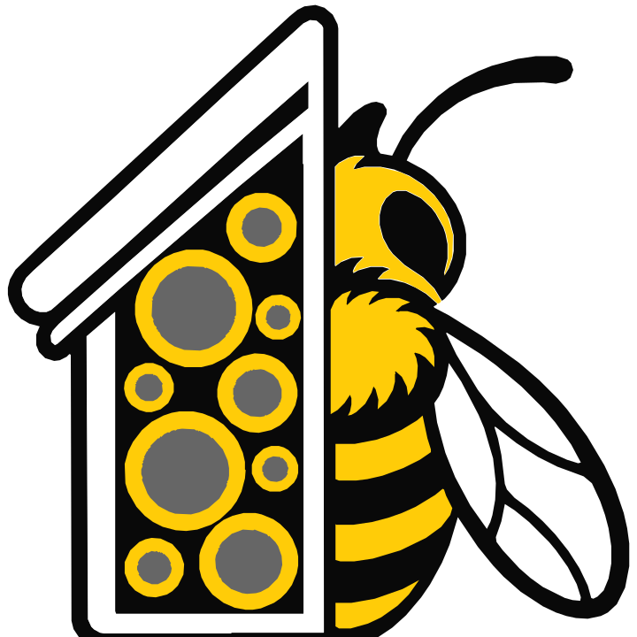
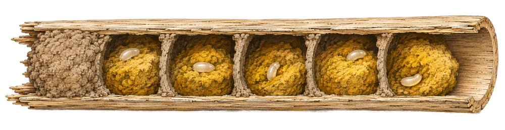
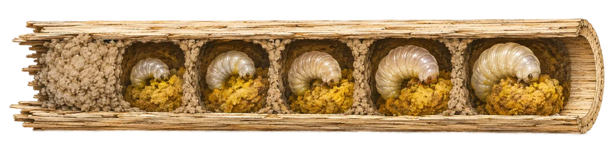
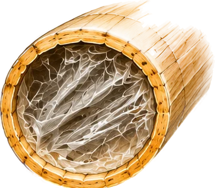
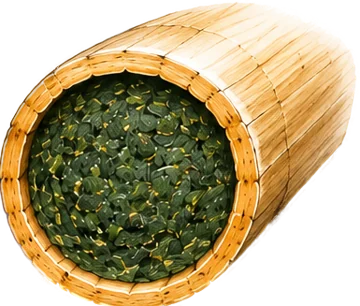
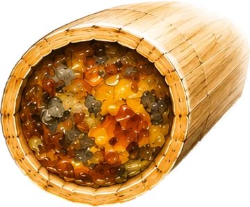
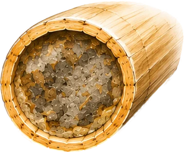

Fogadj be vadméheket kertedbe vagy erkélyedre.Adoptă albine solitare în grădina sau pe balconul tău.Host wild bees in your garden or on your balcony.

Gyakran halljuk, hogy a méhek veszélyben vannak, számuk csökken, és a növények beporzása sem valósul meg hatékonyan. Kevesebben ismerik a magányosan élő vadméhek sokszínű, fajgazdag közösségét, amely fokozott figyelmet igényel.Auzim des că albinele sunt amenințate, că numărul lor scade și că plantele nu mai sunt polenizate eficient. Puțini cunosc însă comunitatea bogată a albinelor solitare, zise și sălbatice, care are nevoie de mai multă atenție.We often hear that bees are in danger, their numbers are falling and plants are no longer pollinated efficiently. Fewer people know the diverse, species-rich community of solitary wild bees, which needs more attention.
A kolozsvári vadméhek kutatási projektje a Babeș-Bolyai Tudományegyetem Biológia és Geológia Karán indult. Célunk a városban élő vadméhfajok megismerése, mert ilyen felmérés még nem készült. A fajlista mellett azt is vizsgáljuk, mennyire telepednek meg a tömbházak erkélyein és a kertes házak udvarain.Proiectul de inventariere a albinelor solitare din Cluj a pornit la Facultatea de Biologie și Geologie a Universității Babeș-Bolyai. Vrem să cunoaștem speciile de albine solitare din oraș, pentru că un astfel de studiu nu există încă. Pe lângă lista de specii, urmărim cât de ușor colonizează balcoanele blocurilor și grădinile urbane.The Cluj wild bee research project started at the Faculty of Biology and Geology of Babeș-Bolyai University. Our aim is to learn which wild bee species live in the city, because no such survey has been made yet. Besides the species list, we study how readily they settle on apartment-block balconies and in house gardens.
Szociális vagy magányos?Sociale sau solitare?Social or solitary?
Nincs királynő, nincs méz. Csak egy anya és a fészke.Fără regină, fără miere. Doar o mamă și cuibul ei.No queen, no honey. Just a mother and her nest.

- családokban (kolóniákban) él
- trăiește în familii (colonii)
- lives in families (colonies)
- királynő, dolgozók és herék
- regină, lucrătoare și trântori
- queen, workers and drones
- mézet és viaszt készít
- produce miere și ceară
- makes honey and wax

- minden nőstény maga épít fészket
- fiecare femelă își construiește singură cuibul
- every female builds her own nest
- nincsenek kasztok
- nu există caste
- no castes
- a nektárt pollennel keverve méhkenyeret készít az utódoknak
- amestecă nectarul cu polen și face „pâine de albine” pentru urmași
- mixes nectar with pollen to make bee bread for her young
Miért fontosak?De ce sunt importante?Why do they matter?
A beporzók nélkülözhetetlenek az ökoszisztéma működésében és az emberi élelmezésben: körte, szilva, repce, uborka, napraforgó, káposzta, paradicsom, kávé.Polenizatorii sunt esențiali pentru ecosistem și pentru hrana noastră: pere, prune, rapiță, castraveți, floarea-soarelui, varză, roșii, cafea.Pollinators are essential for ecosystems and for our food: pears, plums, oilseed rape, cucumbers, sunflowers, cabbage, tomatoes, coffee.
Fontosak, de fogyatkoznak.Importante, dar în declin.Important, but declining.
- nem fenntartható területhasználatutilizarea nesustenabilă a terenurilorunsustainable land use
- intenzív mezőgazdaságagricultura intensivăintensive agriculture
- rovarirtó szerekinsecticideleinsecticides
- invazív fajokspeciile invaziveinvasive species
- szennyezéspoluareapollution
- klímaváltozásschimbările climaticeclimate change
RovarhotelHotelul pentru insecteInsect hotel
Egy köteg nád, egy fúrt fahasáb, és máris van szállás.Un mănunchi de stuf, un butuc găurit, și cazarea e gata.A bundle of reeds, a drilled log, and the rooms are ready.
A rovarhotel búvó-, fészkelő- és telelőhelyet ad a rovaroknak. Egyszerű szerkezet, otthon is elkészíthető a gyerekekkel, és közben a természetet is megfigyelhetik. Mellé ültess változatos, őshonos, méhek által kedvelt növényeket.Hotelul oferă insectelor ascunziș, loc de cuibărit și de iernat. Construcția e simplă, se poate face acasă împreună cu copiii, care pot astfel observa natura. Plantează alături specii indigene variate, pe placul albinelor.An insect hotel gives insects shelter and a place to nest and overwinter. It is simple to build at home with children, who can watch nature at the same time. Plant a variety of native, bee-friendly plants next to it.
Hol fészkelnek a magányos méhek?Unde cuibăresc albinele solitare?Where do solitary bees nest?
Mikor tedd ki?Când îl amplasezi?When to put it out?
A szobák belsejeÎn interiorul camerelorInside the rooms
Egy nádszál, egy évnyi fejlődés.Un fir de stuf, un an de dezvoltare.One reed, one year of development.
A ciklus kezdete fajonként eltér: egyesek kora tavasszal, mások nyár végén vagy kora ősszel petéznek. Az utódok fejlődése hasonló, csak az időtartam változik.Începutul ciclului diferă de la o specie la alta: unele depun ouăle primăvara devreme, altele la sfârșitul verii sau toamna. Dezvoltarea urmașilor e asemănătoare, doar durata variază.The start of the cycle differs between species: some lay eggs in early spring, others in late summer or early autumn. The offspring develop in a similar way; only the timing changes.

TavaszPrimăvaraSpringMéhkenyér és petePâine de albine și ouBee bread and egg
A nőstény pollent és nektárt gyűjt a cellákba, majd mindegyik méhkenyérre egy petét rak.Femela adună polen și nectar în celule, apoi depune câte un ou pe fiecare porție de pâine de albine.The female stocks the cells with pollen and nectar, then lays one egg on each loaf of bee bread.

NyárVaraSummerLárvákLarveleLarvae
Kikelnek a lárvák és a méhkenyérből táplálkoznak. Egyes cellákban az utód nem éri el a lárva stádiumot.Larvele eclozează și se hrănesc cu pâinea de albine. În unele celule urmașul nu ajunge la stadiul de larvă.The larvae hatch and feed on the bee bread. In some cells the offspring never reaches the larval stage.

TélIarnaWinterSelyemgubóCoconul de mătaseSilk cocoon
A lárva selyemgubót sző maga köré, abban telel át, és tavasszal vagy nyáron kifejlett méhként távozik.Larva își țese un cocon de mătase, iernează în el și iese primăvara sau vara ca adult.The larva spins a silk cocoon around itself, overwinters in it, and leaves as an adult bee in spring or summer.
VendéglistaLista oaspețilorGuest list
Ki költözik be, és ki jön hívatlanul?Cine se mută, și cine vine nepoftit?Who moves in, and who comes uninvited?
Források és módszerekSurse și metodeSources and methods
A fajleírások adatforrásai. iNaturalist: kutatási minőségű (közösségileg megerősített) európai megfigyelések, letöltve 2026. november 14-én; az országot a megfigyelés koordinátái alapján rendeltük hozzá. Erdély alatt a 16 erdélyi, partiumi és bánsági megyét (Fehér, Arad, Bihar, Beszterce-Naszód, Brassó, Krassó-Szörény, Kolozs, Kovászna, Hargita, Hunyad, Máramaros, Maros, Szilágy, Szatmár, Szeben, Temes), Kolozsvár alatt a városközponttól mért 10 km-es körzetet értjük. A repülési időszak azokat a hónapokat jelöli, amelyekre az európai megfigyelések legalább 5%-a esik; 20-nál kevesebb adat esetén csak tájékoztató jellegű. 13 később felvett fajhoz az iNaturalist-összesítés még nem készült el. BeeHost 2024: az önkéntesek 50 kolozsvári rovarhotelének 2024-es anyaga, 1 km-es rácscellákban összesítve; a pontos hotelhelyeket és a házigazdák adatait nem közöljük. Ahol csak a nemzetség vagy a család ismert, a faji határozás folyamatban van. A régi irodalmi adatokat (pl. Henrich 1882; Mocsáry 1874, 1897, 1918; Szilády 1914; Zilahi Kiss 1904, 1915; Móczár 1947, 1952; Aftene 1972, 1979; Zanden & Matache 1986; Pascu 2003; Scobiola-Palade 1965–1989) az alább felsorolt összefoglaló munkákból idézzük. A történeti helységneveket magyarul adjuk meg.Sursele datelor din descrierile speciilor. iNaturalist: observații europene de calitate „research grade” (confirmate de comunitate), descărcate la 14 noiembrie 2026; țara a fost atribuită după coordonatele observației. Prin Transilvania înțelegem cele 16 județe din Transilvania, Crișana–Maramureș și Banat (Alba, Arad, Bihor, Bistrița-Năsăud, Brașov, Caraș-Severin, Cluj, Covasna, Harghita, Hunedoara, Maramureș, Mureș, Sălaj, Satu Mare, Sibiu, Timiș), iar prin Cluj o rază de 10 km de la centrul orașului. Perioada de zbor indică lunile în care cad cel puțin 5% din observațiile europene; sub 20 de date este doar orientativă. Pentru 13 specii adăugate ulterior sinteza iNaturalist nu a fost încă realizată. BeeHost 2024: materialul din 2024 al celor 50 de hoteluri ale voluntarilor din Cluj, agregat în celule de grilă de 1 km; nu publicăm amplasarea exactă a hotelurilor și datele gazdelor. Unde se cunoaște doar genul sau familia, identificarea la nivel de specie este în curs. Datele vechi de literatură (de ex. Henrich 1882; Mocsáry 1874, 1897, 1918; Szilády 1914; Zilahi Kiss 1904, 1915; Móczár 1947, 1952; Aftene 1972, 1979; Zanden & Matache 1986; Pascu 2003; Scobiola-Palade 1965–1989) sunt citate din lucrările de sinteză de mai jos.Data sources of the species accounts. iNaturalist: research-grade (community-confirmed) European observations downloaded on 14 November 2026; each record was assigned to a country from its coordinates. Transylvania means the 16 counties of Transylvania, Crișana–Maramureș and the Banat (Alba, Arad, Bihor, Bistrița-Năsăud, Brașov, Caraș-Severin, Cluj, Covasna, Harghita, Hunedoara, Maramureș, Mureș, Sălaj, Satu Mare, Sibiu, Timiș), and Cluj a 10 km radius around the city centre. The flight period covers the months holding at least 5% of the European records; with fewer than 20 records it is indicative only. iNaturalist summaries have not yet been compiled for 13 species added later. BeeHost 2024: the 2024 material from 50 volunteer insect hotels in Cluj-Napoca, aggregated into 1 km grid cells; exact hotel locations and host details are not published. Where only the genus or family is known, species-level identification is under way. Older literature records (e.g. Henrich 1882; Mocsáry 1874, 1897, 1918; Szilády 1914; Zilahi Kiss 1904, 1915; Móczár 1947, 1952; Aftene 1972, 1979; Zanden & Matache 1986; Pascu 2003; Scobiola-Palade 1965–1989) are cited from the review works listed below.
- Almeida, E.A.B. (2008). Colletidae nesting biology (Hymenoptera: Apoidea). Apidologie 39: 16–29. https://doi.org/10.1051/apido:2007049
- Ban-Calefariu, C. (2008). The seasonal dynamics of Megachilidae and Antophoridae species (Hymenoptera: Apoidea) in Romania. Entomologica Romanica 13: 23–28. https://entomologica-romanica.reviste.ubbcluj.ro/13_2008/ER13200804_Ban-Calefariu.pdf
- Ban-Calefariu, C. & Ljubomirov, T. (2009). New data on the distribution of some Megachilinae (Hymenoptera: Apoidea: Megachilidae) in Romania. Linzer biologische Beiträge 41(2): 1803–1816. https://www.zobodat.at/pdf/LBB_0041_2_1803-1816.pdf
- BeeHost 2024: a kolozsvári BeeHost-felmérés 2024-es rovarhotel-anyaga (50 hotel, 27 db 1 km-es rácscella), Babeș-Bolyai Tudományegyetem, Biológia és Geológia Kar.
- Bila Dubaić, J., Raičević, J., Plećaš, M., Lanner, J., Nikolić, P., Žikić, V., Stanisavljević, L. & Ćetković, A. (2021). Further range expansion of the sculptured resin bee (Megachile sculpturalis) in Serbia and Bosnia & Herzegovina. Acta Entomologica Serbica 26(2): 37–63. https://doi.org/10.5281/zenodo.5537059
- Bila Dubaić, J., Lanner, J., Rohrbach, C., Meimberg, H., Wyatt, F., Čačija, M., Galešić, M.A., Ješovnik, A., Samurović, K., Plećaš, M., Raičević, J. & Ćetković, A. (2022). Towards a real-time tracking of an expanding alien bee species in Southeast Europe through citizen science and floral host monitoring. Environmental Research Communications 4(8): 085001. https://doi.org/10.1088/2515-7620/ac8398
- Bogo, G., Fisogni, A., Iannone, A., Grillenzoni, F.-V., Corvucci, F. & Bortolotti, L. (2024). Nesting biology and nest structure of the exotic bee Megachile sculpturalis. Bulletin of Entomological Research 114(1): 67–76. https://doi.org/10.1017/S0007485323000627
- Bogusch, P. (2021). The genus Gasteruption Latreille, 1796 (Hymenoptera: Gasteruptiidae) in the Czech Republic and Slovakia: distribution, checklist, ecology, and conservation status. Zootaxa 4935(1): 1–63. https://doi.org/10.11646/zootaxa.4935.1.1
- Bogusch, P., Hlaváčková, L., Petr, L. & Bosch, J. (2020). Nest structure, pollen utilization and parasites associated with two west-Mediterranean bees (Hymenoptera, Apiformes, Megachilidae) nesting in empty snail shells. Journal of Hymenoptera Research 76: 113–125. https://doi.org/10.3897/jhr.76.49579
- Bosch, J. & Kemp, W.P. (2002). Developing and establishing bee species as crop pollinators: the example of Osmia spp. (Hymenoptera: Megachilidae) and fruit trees. Bulletin of Entomological Research 92: 3–16. https://doi.org/10.1079/BER2001139
- BWARS – Bees, Wasps & Ants Recording Society: Chelostoma florisomne fajadatlap. https://bwars.com/node/87
- Ćetković, A., Čubrilović, B., Plećaš, M., Popović, A., Savić, D. & Stanisavljević, L. (2012). First records of the invasive American wasp Isodontia mexicana (Hymenoptera: Sphecidae) in Serbia. Acta Entomologica Serbica 17(1/2): 63–72.
- Constantineanu, M.I. & Constantineanu, R.M. (1968). Contributions à l’étude du genre Perithous (Hym., Ichneum.) de la R.S. România. Zoologischer Anzeiger 180(3–4): 228–258.
- Farkač, J., Král, D. & Škorpík, M. (szerk.) (2005). Červený seznam ohrožených druhů České republiky. Bezobratlí. AOPK ČR, Praha, 760 pp.
- Fateryga, A.V., Carpenter, J.M. & Fateryga, V.V. (2023). Ancistrocerus capra (de Saussure, 1857), a valid species, not a synonym of A. antilope (Panzer, 1798) (Hymenoptera: Vespidae: Eumeninae). American Museum Novitates 4002. https://doi.org/10.1206/4002.1
- Gagiu, A. & Osten (2025). [A nagyváradi Körösvidéki Múzeum (Muzeul Ţării Crişurilor) határozott Hymenoptera-gyűjteménye.] Nymphaea – Folia Naturae Bihariae, 53–62. https://nymphaea.mtariicrisurilor.ro/wp-content/uploads/2025/07/4.-Gagiu-Osten-pag.-53-62.pdf
- Geslin, B., Gachet, S., Deschamps-Cottin, M., Flacher, F., Ignace, B., Knoploch, C., Meineri, É., Robles, C., Ropars, L., Schurr, L. & Le Féon, V. (2020). Bee hotels host a high abundance of exotic bees in an urban context. Acta Oecologica 105: 103556. https://doi.org/10.1016/j.actao.2020.103556
- Gradinarov, D. (2017). First records of the American wasps Sceliphron caementarium (Drury, 1770) and Isodontia mexicana (de Saussure, 1867) (Hymenoptera: Sphecidae) from Bulgaria. ZooNotes 118: 1–4.
- Gusenleitner, J. (2013). Die Sapygina-Arten aus dem Mittelmeerraum (Hymenoptera: Sapygidae). Linzer biologische Beiträge 45(2): 1815–1819.
- Hejda, R., Farkač, J. & Chobot, K. (szerk.) (2017). Červený seznam ohrožených druhů České republiky. Bezobratlí. Příroda 36. AOPK ČR, Praha.
- Hesami, S., Akrami, M.A. & Baur, H. (2005). Leucospis dorsigera Fabricius (Hymenoptera, Leucospidae) as a hyperparasitoid of Cerambycidae (Coleoptera) through Xoridinae (Hymenoptera: Ichneumonidae) in Iran. Journal of Hymenoptera Research 14(1): 66–68.
- iNaturalist: kutatási minőségű (közösségileg megerősített) európai megfigyelések, letöltve 2026. november 14. https://www.inaturalist.org
- INRAE – Encyclopédie des pucerons: Pemphredon lethifer fajadatlap (Janvier 1961 és Danks 1968 fészekbiológiai adatainak összefoglalásával). https://eng-encyclopedie-pucerons.hub.inrae.fr/species/insect-predators/hymenoptera-crabronidae/pemphredon-lethifer
- Johansson, N. & van Achterberg, C. (2016). Revision of the Palaearctic Gasteruption assectator aggregate, with special reference to Sweden (Hymenoptera, Gasteruptiidae). ZooKeys 615: 73–94. https://doi.org/10.3897/zookeys.615.8857
- Józan, Z. (2011). Checklist of Hungarian Sphecidae and Apidae species (Hymenoptera, Sphecidae and Apidae). Natura Somogyiensis 19: 177–200.
- Józan, Zs. (2018). A Dél-Dunántúl fémdarázs faunája (Hymenoptera: Chrysididae). Natura Somogyiensis 31: 89–106. https://doi.org/10.24394/NatSom.2018.31.89
- Klimov, P.B. & OConnor, B.M. (2008). Morphology, Evolution, and Host Associations of Bee-Associated Mites of the Family Chaetodactylidae (Acari: Astigmata), with a monographic revision of North American taxa. Miscellaneous Publications, Museum of Zoology, University of Michigan 199. Ann Arbor.
- Korenko, S., Isaia, M., Satrapová, J. & Pekár, S. (2014). Parasitoid genus-specific manipulation of orb-web host spiders (Araneae, Araneidae). Ecological Entomology 39(1): 30–38. https://doi.org/10.1111/een.12067
- Kovács, K. Ecologia urbană a albinelor solitare cuibăritoare în cavități – studiu de caz din Cluj-Napoca [Üregekben fészkelő magányos méhek városökológiája – kolozsvári esettanulmány]. MSc-disszertáció (2023-as adatok), Babeș-Bolyai Tudományegyetem, Biológia és Geológia Kar, Kolozsvár; témavezető: László Z.
- Krunić, M., Stanisavljević, L., Pinzauti, M. & Felicioli, A. (2005). The accompanying fauna of Osmia cornuta and Osmia rufa and effective measures of protection. Bulletin of Insectology 58(2): 141–152.
- Lampert, K.P., Pasternak, V., Brand, P., Tollrian, R., Leese, F. & Eltz, T. (2014). ‘Late’ male sperm precedence in polyandrous wool-carder bees and the evolution of male resource defence in Hymenoptera. Animal Behaviour 90: 211–217. https://doi.org/10.1016/j.anbehav.2014.01.034
- Le Féon, V., Aubert, M., Genoud, D., Andrieu-Ponel, V., Westrich, P. & Geslin, B. (2018). Range expansion of the Asian native giant resin bee Megachile sculpturalis (Hymenoptera, Apoidea, Megachilidae) in France. Ecology and Evolution 8(3): 1534–1542. https://doi.org/10.1002/ece3.3758
- Lehrer, A.Z. & Lehrer, M. (1965). Catalogue systématique, synonymique et zoogéographique de la super-famille Pompiloidea Berland 1951 (Hymenoptera) de la Roumanie. Bulletin et Annales de la Société Royale d’Entomologie de Belgique 101: 41–80.
- Lehrer, A.Z. & Scutaru, M. (1963). Eumenidae, Pompilidae et Ceropalidae de la Moldavie (Hymenoptera, Aculeata). Bulletin et Annales de la Société Royale d’Entomologie de Belgique 99: 260–272.
- Lindermann, L., Grabener, S., Fornoff, F., Hopfenmüller, S., Schiele, S., Stahl, J. & Dieker, P. (2023). Wildbienen und Wespen in Nisthilfen bestimmen: Ein Bestimmungsschlüssel für Deutschland. Thünen-Ratgeber. Thünen-Institut, Braunschweig. https://wildbienen.thuenen.de/fileadmin/nisthilfen/PDFs_zum_Download/Bestimmungsschl%C3%BCssel_Wildbienen_Wespen.pdf
- Mader, E., Spivak, M. & Evans, E. (2010). Managing Alternative Pollinators: A Handbook for Beekeepers, Growers, and Conservationists. SARE Handbook 11, NRAES-186. SARE, College Park & NRAES, Ithaca. https://www.sare.org/resources/managing-alternative-pollinators/
- Madl, M. (2014). New records of the family Leucospidae (Hymenoptera, Chalcidoidea) from Kazakhstan. Linzer biologische Beiträge 46(1): 795–797.
- Majka, C.G., Philips, T.K. & Sheffield, C. (2007). Ptinus sexpunctatus Panzer (Coleoptera: Anobiidae, Ptininae) newly recorded in North America. Entomological News 118: 73–76.
- Matthews, R.W., González, J.M., Matthews, J.R. & Deyrup, L.D. (2009). Biology of the parasitoid Melittobia (Hymenoptera: Eulophidae). Annual Review of Entomology 54: 251–266. https://doi.org/10.1146/annurev.ento.54.110807.090440
- Müller, A. (2016–): Palaearctic osmiine bees – systematics and biology of a fascinating group of solitary bees. ETH Zürich, online adatbázis. http://blogs.ethz.ch/osmiini
- Paukkunen, J., Rosa, P., Soon, V., Johansson, N. & Ødegaard, F. (2014). Faunistic review of the cuckoo wasps of Fennoscandia, Denmark and the Baltic countries (Hymenoptera: Chrysididae). Zootaxa 3864(1): 1–67.
- Paukkunen, J., Berg, A., Soon, V., Ødegaard, F. & Rosa, P. (2015). An illustrated key to the cuckoo wasps (Hymenoptera, Chrysididae) of the Nordic and Baltic countries, with description of a new species. ZooKeys 548: 1–116. https://doi.org/10.3897/zookeys.548.6164
- Penn State Extension (2024). Enemies of Mason Bees. https://extension.psu.edu/enemies-of-mason-bees
- Pitts-Singer, T.L. & Cane, J.H. (2011). The alfalfa leafcutting bee, Megachile rotundata: the world’s most intensively managed solitary bee. Annual Review of Entomology 56: 221–237. https://doi.org/10.1146/annurev-ento-120709-144836
- Polidori, C., Boesi, R. & Borsato, W. (2011). Few, small, and male: Multiple effects of reduced nest space on the offspring of the solitary wasp, Euodynerus (Pareuodynerus) posticus (Hymenoptera: Vespidae). Comptes Rendus Biologies 334: 50–60. https://doi.org/10.1016/j.crvi.2010.11.003
- Praz, C.J., Müller, A. & Dorn, S. (2008a). Specialized bees fail to develop on non-host pollen: do plants chemically protect their pollen? Ecology 89: 795–804. https://doi.org/10.1890/07-0751.1
- Praz, C.J., Müller, A. & Dorn, S. (2008b). Host recognition in a pollen-specialist bee: evidence for a genetic basis. Apidologie 39: 547–557. https://doi.org/10.1051/apido:2008034
- Pulawski, W.J. (2026). Catalog of Sphecidae sensu lato. California Academy of Sciences, San Francisco; nemzetségenkénti PDF-ek (Trypoxylon, Passaloecus, Pemphredon, Spilomena, Nitela), elérve 2026. november 23. https://researcharchive.calacademy.org/research/entomology/Entomology_Resources/Hymenoptera/sphecidae/genera/
- Rosa, P., Proshchalykin, M.Yu., Halada, M. & Aibek, U. (2020). First checklist of the chrysidid wasps (Hymenoptera, Chrysididae) of Mongolia, with description of new species. ZooKeys 999. https://doi.org/10.3897/zookeys.999.58536
- Schirmel, J., Entling, M.H. & Eckerter, P.W. (2020). Eichenschrecken als Hauptbeute des neozoischen Stahlblauen Grillenjägers Isodontia mexicana (Hymenoptera: Sphecidae) in der südpfälzischen Agrarlandschaft. Articulata 35: 149–160. https://www.zobodat.at/pdf/Articulata_35_2020_0149-0160.pdf
- Sedivy, C., Praz, C.J., Müller, A., Widmer, A. & Dorn, S. (2008). Patterns of host-plant choice in bees of the genus Chelostoma: the constraint hypothesis of host-range evolution in bees. Evolution 62(10): 2487–2507. https://doi.org/10.1111/j.1558-5646.2008.00465.x
- Seidelmann, K. (2021). Territoriality is just an option: allocation of a resource fundamental to the resource defense polygyny in the European wool carder bee, Anthidium manicatum (Hymenoptera: Megachilidae). Behavioral Ecology and Sociobiology 75: 138. https://doi.org/10.1007/s00265-021-03073-6
- Skolka, M., Memedemin, D., Drăgan, O. & Gavrilescu, C. (2022). New data on the presence of Sceliphron curvatum (F. Smith, 1870) (Hymenoptera, Sphecidae) in Romania. Poszter, 11th ESENIAS and DIAS Scientific Conference.
- Tomozei, B. (2008). Checklist of bees of the genera Colletes Latreille 1930 [sic] and Hylaeus Fabricius 1793 of Romania (Hymenoptera: Apiformes: Colletidae). Entomologie faunistique – Faunistic Entomology 61(3): 87–97.
- van Achterberg, C. & Talebi, A.A. (2014). Review of Gasteruption Latreille (Hymenoptera, Gasteruptiidae) from Iran and Turkey, with the description of 15 new species. ZooKeys 458: 1–187. https://doi.org/10.3897/zookeys.458.8531
- Vas, Z. (2016). Contributions to the knowledge of Ichneumonidae and Gasteruptiidae fauna of Sălaj County, Romania (Hymenoptera). Studia Universitatis „Vasile Goldiş”, Seria Ştiinţele Vieţii 26(1): 131–138.
- Vas, Z., Szöllősi-Tóth, P. & Muskovits, J. (2016): Passaloecus gracilis és Trypoxylon figulus Szilágy megyei adatai; idézi: Pulawski, Catalog of Sphecidae.
- Vikberg, V. (2000). A re-evaluation of five European species of Spilomena with a key to European species and relevance to the fauna of North Europe, especially Finland (Hymenoptera: Pemphredonidae). Entomologica Fennica 11(1): 35–55. https://doi.org/10.33338/ef.84044
- Voith, J. (1995). Solierella compedita (Piccioli, 1869) nun auch in Bayern nachgewiesen (Hymenoptera, Sphecidae). Nachrichtenblatt der Bayerischen Entomologen 44(3/4).
- von Adelmannsfelden, S. & Fornoff, F. (2025). Prey and nesting preferences of the alien wasp Isodontia mexicana (Hymenoptera, Sphecidae) in southern Germany. Journal of Hymenoptera Research 98: 603–619. https://doi.org/10.3897/jhr.98.148947
Felmérés · önkénteseket keresünkCercetarea · căutăm voluntariSurvey · volunteers wanted
Legyél a házigazdánk.Fii gazda pentru albine.Be our host.
Több méhfaj alkalmazkodott a városi élethez, mert itt is talál táplálékot és fészkelőhelyet. A rovarhotelt kihelyező önkéntesek saját hoteljeik megfigyelésével segítik Kolozsvár méheinek megismerését.Mai multe specii de albine s-au adaptat vieții urbane, pentru că găsesc aici hrană și loc de cuibărit. Voluntarii care amplasează un hotel ajută, prin observațiile lor, la cunoașterea albinelor din Cluj-Napoca.Several bee species have adapted to city life because they find food and nest sites here too. Volunteers who put out an insect hotel help us learn about the bees of Cluj-Napoca by watching their own hotels.
zoltan.laszlo@ubbcluj.ro
Részletek a kutatásról →Detalii despre cercetare →More about the research →
Mit csinálsz?Ce faci?What do you do?
- 01Kihelyezed a hotelt az erkélyen vagy a kertben.Amplasezi hotelul pe balcon sau în grădină.Put the hotel out on your balcony or in your garden.
- 02Fényképezed a beköltöző vadméheket és más rovarokat.Fotografiezi albinele sălbatice și celelalte insecte care se mută.Photograph the wild bees and other insects that move in.
- 03Követed a tapasztások számát, és ha tudod, meghatározod az egyedeket.Urmărești numărul de intrări astupate și, dacă poți, identifici indivizii.Keep track of the number of sealed tubes and, if you can, identify the insects.
- 04Időnként jelentést küldesz.Trimiți din când în când un raport.Send us a report from time to time.
Amit cserébe adunkCe oferimWhat we offer in return
Időnkénti találkozók, ahol megbeszéljük az addig gyűjtött adatokat, és egy naptár a résztvevők fotóival.Întâlniri ocazionale în care discutăm datele colectate și un calendar cu fotografiile participanților.Occasional meetings to discuss the data collected so far, and a calendar with the participants' photos.
Így olvasd a lezárt csöveketCum citești tuburile astupateHow to read the sealed tubes
A dugó anyaga elárulja, ki építette a fészket. A nyitott cső még szabad.Materialul dopului arată cine a construit cuibul. Un tub deschis este încă liber.The plug material tells you who built the nest. An open tube is still free.








| SzámNr.No. | FajSpeciaSpecies | Fészekzárás típusaTipul de închidere a cuibuluiType of nest closure |
|---|---|---|
| 1 | Hylaeus communis | Celofánszerű, áttetsző hártyaMembrană transparentă, asemănătoare celofanuluiTransparent, cellophane-like membrane |
| 2 | Osmia leaiana | Növényi pépből készült zárásDop din pastă vegetalăPlug of chewed plant pulp |
| 3 | Osmia brevicornis | Növényi pépből készült zárásDop din pastă vegetalăPlug of chewed plant pulp |
| 4 | Megachile rotundata | Levél- vagy sziromdarabokból készült zárásDop din bucăți de frunze sau petalePlug of leaf or petal pieces |
| 5 | Osmia florisomnis | Durvább szemcséjű sárdugóDop de noroi cu granulație mai grosierăCoarse-grained mud plug |
| 6 | Osmia cornuta | Finomabb szerkezetű sárdugóDop de noroi cu structură mai finăFine-textured mud plug |
| 7 | Hoplitis adunca | Gyantás zárás, fényes változatDop de rășină, variantă lucioasăResin plug, glossy form |
| 8 | Hoplitis adunca | Gyantás zárás, matt változatDop de rășină, variantă matăResin plug, matt form |
| 9 | Osmia bicornis | SárdugóDop de noroiMud plug |
Megjegyzés: a rajz szemléltető ábra; a fészekzárások tényleges anyagát és szerkezetét a fajok biológiájával összevetve kell ellenőrizni.Notă: desenul este ilustrativ; materialul și structura reală a dopurilor trebuie verificate în funcție de biologia speciilor.Note: the drawing is illustrative; the actual material and structure of the nest closures should be checked against the biology of each species.